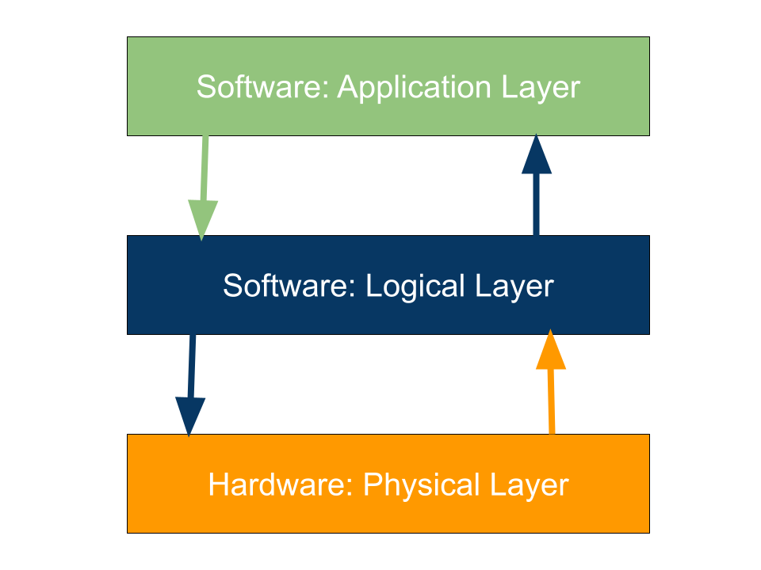
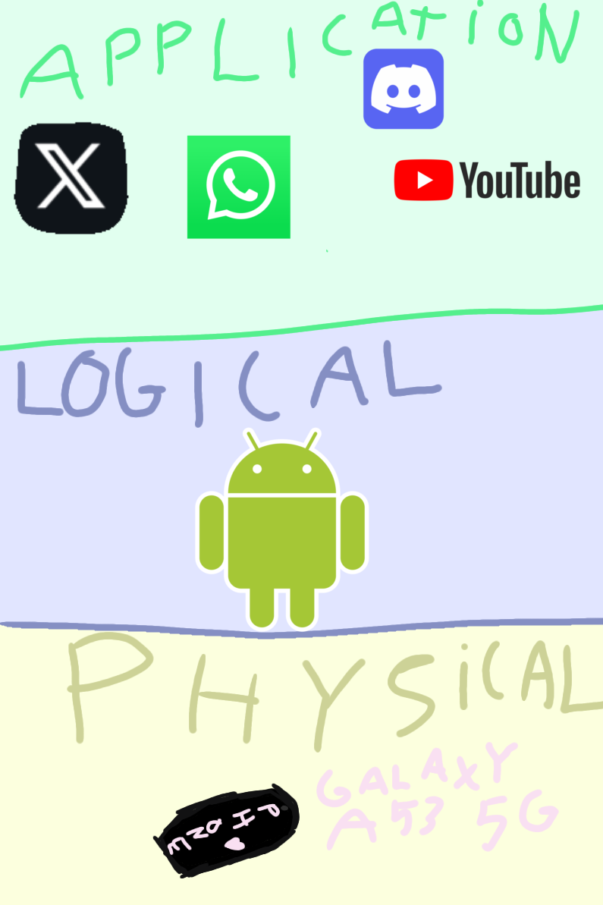

3-layermodel
Yes, it is specifically 3, you may be asking yourself what layermodel I might be talking about, since there are multiple ways to interpret it. The one I am referring to consists of a physical layer, a logical layer and an application layer. Here we'll have a short explanation what all of this means.
- Physical layer: This is a layer for the physical things of a device, like a touchscreen or keyboard for instance. Everything you can physically touch, is to be found on this layer. But that also includes things like memory, RAM, CPU, ROM and clockspeed for instance. User-interface is used to let the physical layer communicate with other layers. ROM is also part of the physical layer, it stands for Read Only Memory. The data stored in the ROM can not be altered and only be read, just like the name suggests. It is useful to store data that is barely changed.
- Logical layer: Here you mostly find the operating system, Samsung phones for instance run on android, but also DBMS (DataBaseManagementSystem), which use is basicly to make the data of a database accessible and secure, while also managing it. An operation system is also called a driver, which is found in every electronic device, even your mouse. The main function of an OS is to make the computer environment more convenient to use, as a secondary goal the OS is to use the recources as efficient as possible. Why is it used then? It is because the OS handles multiple responsibilities. They're listed down below.
- It controls all the computer resources and protects this.
- It provides valuable services to user programs.
- It coordinates the execution of user programs.
- It provides resources for user programs.
- It provides an interface (virtual machine) to the user.
- It hides the complexity of software.
- It supports multiple execution modes.
- It monitors the execution of user programs to prevent errors.
- It manages the primary memory or main memory.
- It is used for warm booting (restarting your computer).
- It manages time and recources.
- It takes care of network management.
- Application layer: This is where your lovely apps come into play. What's app, snapchat, you name it. This layer runs that. API (Application Programming Interface) let's the OS (operating system) communicate with this layer.
It has a lot of responsibilites, which makes the OS essential for many devices.
That's how the layers communicate and make up the devices we use so regularly nowadays. Down below there's a overview on how the layers interact.

If anything wasn't clear, this is an example of how my phone is made up in this three layer system:
